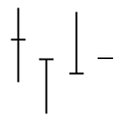
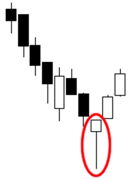

урок 1: Введение в рынок Форекс
Понятие forex
")
Чтобы понять, что такое Forex, нужно сначала разобраться с валютами и возможными операциями с ними. Как всем хорошо известно, в каждой стране есть своя валюта. В силу тех или иных причин мы иногда идём в обменник и покупаем евро, потому как в скором времени планируется поездка, например на Чемпионат Европы по футболу. Рублями там не расплатиться, поэтому нужно заранее взять с собой деньги, которые находятся в обороте на этой территории. Сейчас практически в любом банке есть обменный пункт, где нам предоставляется возможность купить доллары или евро, а иногда и больший перечень валют. Наиболее предусмотрительные граждане ищут такой обменник, который даст наилучший курс.
И здесь всё логично – зачем получать за 7000 рублей 105 долларов, если можно пройти чуть дальше и уже в другом обменном пункте получить 107 долларов. На первый взгляд может показаться, что разница несущественная, и, возможно, так оно и есть, но не для всех. И если представить, что это уже не 7000 рублей меняется, а все 70 000, то экономия может быть 20 долларов. Так мы подходим к первой важной мысли – нам готовы обменять деньги на иностранную валюту, причём есть множество предложений и разумным вариантом будет выбрать самое выгодное из них. Это примерно такая же модель, как на овощном рынке – у одного продавца помидоры стоят 100 рублей за килограмм, при этом зеленоватые, пахнут пластиком, а у соседнего продавца гораздо более симпатичные и всего за 90 рублей килограмм. Доллары, хоть и зелёные, но не помидоры, качества примерно одинакового, а вот цена может отличаться.
Итак, выше мы рассмотрели самый примитивный пример взаимодействия человека с продажей или покупкой валюты. Сам по себе рынок, на котором осуществляется этот обмен, называется форекс. Это слово образовано от двух других, взятых из английского языка – foreign, что означает зарубежный, иностранный, а также exchange, что, в свою очередь, имеет значение обмена. Таким образом, общий смысл что такое форекс становится понятен – обмен зарубежных денег. Это общее название всего огромного валютного рынка, который включает в себя и вот такие мелкие обменные операции в кассе банка. И эти операции можно назвать самым первым и маленьким звеном во всей система обмена денег.

Участники валютного рынка
Это был пример наличного расчёта на форекс, когда отдавали рубли и получали бумажные доллары или евро. Но в нынешний век развития цифровой индустрии всё больше и больше людей переходят на безналичный расчёт, хранят свои сбережения на депозите, а деньги “на жизнь” берут с карточки, куда приходит зарплата. Когда открывается счёт в банке, обычно сотрудники в достаточно назойливой форме предлагают также открыть счета в евро и в долларах, иногда даже бесплатно в довесок к основному. Имея такой счёт, можно запросто через мобильный банкинг перевести деньги со своего рублёвого счёта на долларовый. Это тот же механизм, что и в случае с кассой, но только теперь даже выходить на улицу не надо – всё сделали в электронном виде. Быстро, удобно, да ещё и обменный курс в такой ситуации оказывается зачастую гораздо лучше того, что предлагают в отделении. Далее ещё один пример того, что такое forex.
Теперь мы знаем, что можно менять как деньги в наличном виде, так и в безналичном, нужно всего лишь обратиться в банк или обменник. Простой гражданин, который летает в отпуск раз в год и иногда пополняет свой валютный счёт в банке, является участником валютных торгов, даже не подозревая об этом. Просто нужно взглянуть на это с другой стороны – например, такой человек потратил в отпуске 300- 500 долларов, которые он перед этим купил. Если мы возьмём среднее количество туристов, которые каждый год улетают за границу и тратят там доллары, то совокупная сумма составит уже несколько миллиардов долларов. То есть по факту это ежегодный спрос на доллары, которые необходимы для отдыха, и выражается он вот в таком немаленьком объёме. А теперь попробуем представить себе, что и в нашу страну также въезжает колоссальное количество туристов, которые хотят купить рубль – никто на кассе в магазине не примет доллару к оплате бутылки с минеральной водой.
В итоге получаем очень сложную систему, где есть огромное количество участников со своими разными интересами. А к ней ещё добавляется фактор сезонности – за границу летят зимой, а туристы в Россию стремятся, наоборот, летом. Далее можно добавить разного рода праздники, спортивные мероприятия и так далее, что даёт просто бесчисленное количество факторов, влияющих на то, как акт
ивно покупается какая-либо валюта. Но это всё мелочи по сравнению с корпоративной деятельностью и торговыми отношениями с другими странами. К примеру, есть компания, которая занимается металлообработкой и продаёт готовые материалы за границу, получая оплату в евро. К тому моменту, когда надо подавать бухгалтерский отчёт и платить налоги, такая фирма вынуждена полученную в евро прибыль конвертировать в рубли, чтобы всё было в соответствии с законодательством. Каждая страна имеет какой-либо экспорт и импорт, что создаёт повсеместную необходимость периодически обменивать одни деньги на другие, все операции проводятся на forex – продаём или покупаем одни деньги за другие.
Итак, у нас уже есть две большие группы участников форекс – простые жители, оперирующие небольшими суммами в практических целях и юридические лица, работающие с иностранцами и вынужденные проводить определённые валютные операции. Возможно, многие из них и не знают, что такое форекс, но являются невольными участниками этого рынка. И подобно тому, как на обычном рынке, если есть высокий спрос на какой-либо товар, то цена на него растёт, так происходит и здесь. Если все будут хотеть купить доллар, но будет мало тех, кто покупает рубль, то доллар начнёт дорожать. То есть у нас получается классическая схема – есть продавцы, есть покупатели, все они объединяются в рамках торговли валютой – ещё один пример того, что такое форекс, для чего он нужен и как он касается всех нас.
Вышеперечисленные категории можно назвать “участники по неволе”. Теперь рассмотрим тех, кто осознанно и без какой-либо необходимости покупает и продаёт валюту. Это люди или организации, которые хотят заработать на том, как вследствие определённых обстоятельств одна валюта дорожает относительно другой. Самый яркий тому пример – кризисная ситуация в экономике. Если вспомнить 2008 год, когда о проблемах не говорил только ленивый. В ситуации неопределённости граждане хотят как минимум сохранить свой капитал, они видят, что доллар стал стремительно дорожать по отношению к рублю. А это неминуемо вызывает рост стоимости всех зарубежных товаров (ещё более яркий пример – 1998 год, когда прилавки магазинов попросту пустели из-за того, что народ хотел максимально быстро вложить деньги хотя бы во что-то).
То есть автомобиль Ford, произведённый в Соединённых Штатах, как стоил 15 000 долларов, так и будет дальше стоить всё те же 15 000 долларов, здесь простая арифметика себестоимости производства и интереса продавца, которому всё равно, что происходит в какой-то стране, ведь были потрачены деньги и продавать дешевле не выгодно. Но в рублях это уже может стать не пятьсот тысяч, а миллион. При этом большая часть населения получает зарплату в рублях, работодателю также всё равно, что происходит с курсом. Всё это приводит к тому, что люди идут в обменники и начинают менять рубли на доллары и евро в надежде сохранить свои сбережения. Так мы получаем ещё одну категорию участников форекс – желающие не потерять.

Теперь переходим к самому важному – участникам валютного рынка, которые хотят заработать на изменении курса. На протяжении последних пятнадцати лет можно выделить периоды, когда рубль находился на стабильных отметках, то есть доллар стоил около 30 рублей и немного колебался, то чуть дороже, то чуть дешевле. После этого начался ипотечный кризис в США и долгий период спада в мировой экономике. На форексе это вылилось в то, что курс доллара стал постоянно меняться. Включая простую логику, можно сделать очень нехитрый вывод – а почему бы не купить доллары по 33 рубля и не продать по 35? Получится заработать, общая сумма в рублях станет больше. Потом подождать немного и снова купить доллары по 33, а если получится, то и по 32, подержать их и потом опять продать подороже. Этот упрощённый вариант даёт понимание о том, какова логика спекулянтов, зарабатывающих на изменении курсов валют.
Если есть такие участники рынка, то логично предположить, что есть и целые организации, которые ставят своей целью получение прибыли на торговли вот таких разниц в цене. Эту категорию представляют банки, инвестиционные фонды, управляющие компании и так далее. Они вкладывают огромные деньги, иногда конкурируя между собой и создавая движения в валютах. Наверное, все слышали про Джорджа Сороса, заработавшего колоссальную сумму денег на обвале английской валюты. А теперь представим, что на рынке форекс работают десятки, сотни таких Соросов, каждый из которых хочет обогатиться. В этот момент у простого обывателя должно измениться понимание того, что такое forex, это не абстрактное явление, а вполне конкретный пример того, как люди зарабатывают деньги по сути из воздуха, это высококонкурентная среда, где каждый хочет урвать свой кусок. Конечным звеном на форекс являются банки, которые оперируют уже сотнями миллионов долларов между собой.
История и масштабы форекс
Перейдём к цифрам. По разным оценкам менее 5% общего объёма валют покупаются и продаются с практической целью, то есть по тем причинам, которые мы описывали в самом начале. Остальные 95% относятся к торговле на форекс с целью заработка. Удаётся это, конечно, не всем, ведь все в плюсе быть не могут по определению. Форекс – замкнутая система, где один зарабатывает, а другой теряет. Если вы купили доллар по 33, а он стал по 32, расстраиваться, наверное, не станете, а просто отложите их “до лучших времён”. Но если вы собираетесь купить их на несколько миллионов рублей, то будете очень внимательно оценивать перспективы, вам вдруг станет очень интересны такие вещи, как показатели экономики страны, политика центрального банка и так далее. Обладая знаниями, на форекс можно очень неплохо зарабатывать, ведь тут всё однозначно – либо цена движется вверх, либо вниз. Кстати, именно по этой причине форекс часто сравнивают с рулеткой и другими азартными играми, но делают такие заявления обычно неосведомленные люди, фундаментально не понимающие природы рынка.

Ещё пятьдесят лет назад мало кто знал, что такое форекс. В основном велась торговля акциями, сырьём, товарами. Но после того, как американский доллар был отвязан от золота, то есть стал простой бумажкой, началось бурное развитие форекс. Оборот за сутки стремительно рос и на данный момент он на порядки больше, чем таковой в других секторах биржи. Этому способствует как налаживание тесных экономических связей между странами в рамках общемировой глобализации, так и желание зарабатывать, в том числе на изменении курса одной валюты к другой. Развитие информационных технологий позволяет сейчас стать участником форекс не выходя из дома – получить доступ к торгам можно буквально за двадцать минут после простой регистрации. Так люди становятся трейдерами – профессиональными участниками рынка, в нашем случае forex.
Подводя итог, можно сказать, что с одной стороны вся структура и участники, описанные выше, довольно проста и понятна, но с другой стороны сам рынок очень и очень сложный механизм, в котором надо разбираться, чтобы достичь успеха. Онлайн forex обучение может помочь вам быстрее справиться с этой задачей. Forex – это не лохотрон, а серьёзная часть мировой экономики, в которой представлены как практическая сторона, так и спекулятивная. В первом случае это часть работы организации или же стремление далёкого от биржи человека не потерять деньги, во втором – сознательные действия постоянного характера, направленные на получение прибыли.
Ордер форекс – это торговое распоряжение клиента, которое брокер ретранслирует на межбанк через общую позицию с другими клиентами. Распоряжение может быть как на открытие позиции, так и на закрытие. То есть любое торговое действие имеет всегда два этапа – открытие позиции и затем её закрытие, которое, правда не всегда происходит по распоряжению самого трейдера – в ситуации с маржин коллом и стоп аутом брокер сам принудительно закрывает позиции при падении маржи ниже установленного порогового значения.
Теперь перейдём к процессу открытия сделки. Ордера на форекс бывают двух типов:
- Вход с рынка. В этом случае перед нами открывается окошко, в котором представлено текущее значение цены в виде тикового графика, при этом отображение идёт двумя линиями – цена продажи и цена покупки. В этом окошке задаётся размер сделки, выставляется ограничение на убыток (стоп лосс), предполагаемая цель движения (тейк профит). После этого остаётся лишь нажать нужную клавишу – открыть покупку или же продажу. После этого происходит обработка распоряжения и позиция открывается.
- Отложенные ордера на форекс. Это второй тип ордеров, который можно выбрать в соответствующем меню всё того же окошка – называется оно “отложенный ордер”. Данный тип ордеров предназначен для торговли по определённой цене, отличающейся от той, что есть в данный момент времени. В окошке задаётся цена, по которой будет совершена сделка, всё те же объём, стоп лосс и тейк профит. В целом, всё то же самое, кроме самой цены исполнения.

Применение отложенных ордеров на форекс
Теперь рассмотрим самые типичные ситуации применения отложенных ордеров форекс. Из определения получаем, что устанавливается цена, по которой произойдёт покупка или продажа. Это очень удобно в следующих моментах:
- Торговля ведётся в ночное время. Например, в европейской части России азиатская торговая сессия идёт в то время, когда все спят. Чтобы не пропустить движение, можно поставить отложенные торговые распоряжения, если есть вероятность того, что цена дойдёт до какой-то планируемой отметки или пробьёт какой-либо ценовой уровень. В этом случае отпадает необходимость сидеть и караулить этот момент. Можно спокойно спать, ведь стоп и тейк также ставятся. То же самое относится и к любому другому времени, в которое нет возможности наблюдать за графиками.
- Торговля на сильных новостях с целью продать после скачка вверх или купить после скачка вниз. То есть, проще говоря, обычно торговля форекс на возврат к точке момента публикации. Это происходит очень часто, есть даже отдельные новости, которые многие предпочитают торговать именно в таком виде, например, выставлять отложенные ордера на форекс в момент публикации данных по рынку труда Соединённых Штатов каждую первую пятницу месяца. Происходит довольно сильное движение, которое затем полностью сходит на нет. Но всё дело в том, что в те секунды, когда цена колеблется по 10-20 пунктов туда-сюда, нет никакой гарантии, что даже очень короткого времени обработки ордера с рынка будет достаточно для открытия позиции. Чтобы избежать этого, используют отложенные – они точно сработают. А для контроля исполнения есть важный параметр – проскальзывание. Это необходимо в той ситуации, когда нет возможности исполнить заявку именно по той цене, которая указана из-за низкой ликвидности. То есть устанавливаем максимально допустимое отклонение от этого значения. Если оно будет превышено – отложенный ордер не сработает.
- Торговля по разным стратегиям также зачастую предполагает использование отложенных ордеров. Например, на пробой свечи или уровня, на отбой от фибоуровня. В последнем случае мы точно знаем ценовое значение, соответственно, нет необходимости ждать, когда же цена к нему подберётся. Самый лучший пример – сеточные стратегии на мартингейле. Куда бы цена не двигалась, через определённое количество пунктов выставляются отложенные ордера, которые последовательно срабатывают.
Виды отложенных ордеров
Сами отложенные ордера на форекс имеют разные названия. Суть остаётся той же самой – продажа или покупка по определённой цене. Но есть отличия по типам. Они бывают лимитные и стоп (не путать со стоп лосс). Главный критерий – это расположение цены, по которой будет исполняться отложенный ордер, по отношению к текущей, а также направление сделки – покупка или продажа. В связи с этим у нас получается в общей сложности четыре типа отложенных ордеров на форекс, которые описываются следующим образом:
- Buy limit. Это отложенный ордер на покупку, который ставится в том случае, когда цена находится ниже текущего уровня. Может применяться для покупки на восходящем тренде после предполагаемой коррекции. Не забываем учитывать спред – получается, что если мы рассчитываем, что цена дойдёт до уровня 1.1233 по EUR/USD, то для покупки нужно ещё прибавить спред, например, 2 пункта – итоговое значение для ордера будет 1.1235, то есть на два пункта выше.
- Buy stop. Также, как и предыдущем случае, это отложенный ордер на покупку, но только теперь цена для входа в рынок по этому ордеру располагается выше текущей, то есть это будет торговля на продолжение восходящего тренда, который в данный момент может быть в любой стадии, или же вообще отсутствовать и просто предполагаться. Пример ситуации на форекс – есть восходящий тренд, который отрисовал максимум и далее началась коррекция. Отложенная покупка на пробой этого максимума с целью продолжения движения вверх будет осуществляться как раз через buy stop. Здесь со спредом получается так же как с лимитной покупкой – к ценовому уровню, на который ориентируемся прибавляем ещё количество пунктов спреда. Это особенно важно при торговле на пробой – может получиться так, что цена ордер заденет и сразу уйдёт обратно. В этом случае получится максимально неудачный вход в сделку. Случается не так часто, но сказать точно, где пробой подтверждён достаточно сложно, поэтому лучше не жадничать и помимо самого спреда ещё прибавлять пару-тройку пунктов.
- Sell limit. Отложенный ордер форекс на продажу, в котором предполагается цена выше, чем в данный момент. Полная противоположность buy limit, то есть, например, имеем тренд, направленный вниз, на котором ожидаем коррекцию вверх. Чтобы войти в продажу по цене выше ставим отложенный ордер sell limit. Со спредом ничего придумывать не надо – график, как правило, строится по цене продажи, поэтому в качестве уровня для входа указываем именно ту цену, которую и ждём.
- Sell stop. Отложенные ордера на форекс для продажи ниже текущего ценового значения. По аналогии с buy stop эти ордера подразумевают торговлю на продолжение тренда или разворот с пробоем важного уровня на восходящем тренде.
Также у некоторых форекс брокеров можно встретить особый вид ордеров - сложные связанные между собой отложенные ордера. То есть это получается ситуация, в которой один ордер срабатывает только после того, как сработал другой. Такой подход используется уже достаточно опытными трейдерами, понимающими механику движения цены возле определённых зон, и строящих свои предположения на основании того, как всё развивалось на примерах в прошлом. Один из простых примеров – построение сетки ордеров после отбоя от уровня, до которого цене ещё надо дойти. Рассмотрим конкретную ситуацию на форекс.
Допустим, мы предполагаем, что тренд вниз заканчивается и будет разворот. Есть ориентир, где он может случиться. При этом мы хотим разбить позицию на несколько частей, то есть входить в рынок через определённые промежутки, пусть это будет 10 пунктов. В случае с обычными отложенными ордерами это будут несколько входов по buy limit, причём каждое последующее срабатывание нового ордера увеличивает общий минус по мере продвижения цены вниз к намеченному уровню. А в случае со связанными отложенными ордерами это будет спокойное ожидание движения к нужной точке, при этом сетка работать начнёт как раз в тот момент, когда цена дойдёт. То есть по дороге к цели разворота ничего не будет происходить. А уже в обратном направлении всё будет работать как и задумано. Это очень удобный подход, позволяющий применять подобные стратегии, но, к сожалению, встречается не так часто.
В целом, отложенные ордера можно назвать достаточно важной возможностью в торговле, которой пользуется практически каждый трейдер на форекс. Простота использования позволяет применять их даже новичкам, второй раз в жизни открывшим торговый терминал. В дальнейшем многие стратегии и торговые системы, применяемые трейдерами, содержат в себе элементы торговли с выставлением отложенных ордеров.

Все мы привыкли к тому, что купленное становится нашим, соответственно, им можно распоряжаться. На простейшем примере покупки валюты в обменнике – купили доллары за рубли, можем делать с ними что захотим, допустим, одолжить кому-нибудь. Они будут по-прежнему нашими, но просто находиться у другого человека или организации. Также можно взять и потратить часть. А затем оставшееся (или возвращённый долг) снова поменять на рубли. В течение всего времени мы будем располагать суммой или долговым обязательством. В случае торговли на форекс всё обстоит в не совсем привычном виде. Здесь есть такое понятие, как маржа - сумма обеспечения. Или ещё есть название гарантийное обеспечение, но оно больше в ходу у фондовых брокеров.
Для того чтобы понять, что такое маржа на форекс, нужно разобраться с процессом заключения сделки. Если мы покупаем одну валюту за другую, то нам нужно, как и в примере с обменником, отдать какую-то часть денег, чтобы получить другую. В нашем случае это обмен валюты, но только реальной поставки не происходит, в этом и отличие от реального обмена в банке. То есть мы как бы купили евро за доллар, но из-за того, что сделали это в электронном пространстве форекс через брокера, никто нам не даёт эти евро, у нас по-прежнему остаются доллары. Но при этом прибыль или убыток начисляются так, как будто мы их действительно держим. Такой подход у многих вызывает чувство недоверия, так как считается, что без реальной поставки это чем-то напоминает азартную игру. Однако, такие заявления абсолютно беспочвенны, просто нужно понимать весь механизм маржинальной торговли, который будет рассмотрен позже.
Таким образом, вместо полученных евро у нас под сделку резервируется сумма денег – та самая маржа. Это обеспечение, которое делает невозможным убыток брокера в случае сильных движений на рынке сопровождающихся снижением ликвидности. Если бы не было маржи, то в этом случае у нас была бы возможность на одну тысячу долларов купить сколько угодно других валют, и ещё и эти валюты между собой торговать. Однако, есть ограничения и именно они делают такой хаотичный процесс невозможным. Рассмотрим на примере, как формируется маржа. Допустим, есть депозит с десятью тысячами долларов. Покупаем уже упомянутую пару EUR/USD объёмом 1 лот. Эти деньги будут задействованы и отразятся в графе “маржа” торгового терминала. Вообще, все деньги делятся на три отдельные категории:
- Баланс. Это сумма средств, которую изначально внёс трейдер и к которой прибавлены все результаты его закрытых сделок. Как положительные, так и отрицательные.
- Маржа. Сумма всех задействованных в сделках средств. Иногда добавляется ещё одна графа – свободная маржа. Это значительно облегчает расчёты объёмов сделок, так как не надо делать это вручную.
- Эквити, также встречается название “средства”. Этот показатель наиболее важный, так как баланс не отражает результата ещё не закрытых сделок. Представляет собой всё тот же баланс, но только с добавлением к нему всех текущих ещё незакрытых сделок. То есть, если баланс, например, 1000$ и есть ещё две сделки с результатами на данный момент +120$ и -40$, то в графе средства будет сумма 1080$, что и есть отражение реального количества денег на счету прямо сейчас. Если сделки закрыть, то баланс, соответственно, станет 1080$.

Каждая открытая сделка приводит к тому, что под неё выделяется маржа. Одна сделка – одна величина, две сделки – уже другая. Это обязательно нужно учитывать в торговле. Теперь рассмотрим как формируется величина маржи, от чего зависит. Как известно, 1 лот – это 100 000 единиц базовой валюты. Если мы торгуем парой с долларом, то считать проще. Если же это кросс, то расчёт будет сложнее. Итак, покупая австралийский доллар за американский доллар по курсу 1.0000, мы получаем маржу в 1000$. Это с учётом стандартного кредитного плеча, которое даёт брокер – 1:100. Если мы будем совершать ту же сделку, но по цене уже 2.0000, то у нас маржа составит 2000$. То есть её величина зависит от текущей котировки – это важный момент, который многие упускают из виду, а ведь валютные пары не стоят на месте, и может возникнуть ситуация, когда трейдер по памяти рассчитывает на одно значение, а оно по факту совершенно другое. Сильные колебания происходят редко, но маржа в совокупности по всем торгуемым инструментам может меняться довольно значительно.
На что влияет показатель маржи
Как уже было сказано, есть маржа, а есть свободная маржа. Простыми словами, второй показатель демонстрирует количество свободных средств, которые можно задействовать в новых сделках. Если совокупный объём открытых позиций слишком большой, то при попытке открыть ещё одну выскочит надпись, что не хватает средств. В этом случае придётся отказываться от входа, либо уменьшать объём. Также есть вариант освободить средства из маржи, закрыв какую-либо сделку. Но не стоит забывать о том, что у разных валютных пар разные размеры залога на 1 лот позиции. То есть может получиться так, что позицию закрыли, а средств всё равно не хватает. Все эти величины обычно можно посмотреть у своего брокера – они, как правило, публикуются в разделе торговых условий, а именно – маржинальные требования, либо же спецификация контрактов. Зная заранее объёмы, можно избежать неприятных ситуаций с нехваткой средств. Хотя, обычно достаточно совершить одну-две сделки по валютной паре форекс, как все числа отложатся в голове. Остальные же инструменты – акции, индексы и прочее лучше смотреть отдельно, они сильно отличаются.
Также нужно смотреть уровень Stop out и Margin call. Они определяют ситуации, когда будет происходить самое неприятное. Что может быть для трейдера – принудительное закрытие позиций. Случается это когда маржа по открытым позициям становится больше, сумма средств. Это не только не даёт открыть новый ордер, но также и при падении до определённого значения вынуждает брокера снижать маржу путём закрытия ордеров. Этот уровень выражается в процентах. То есть, например, уровень стоп аута в 60% принудительное закрытие будет происходить в тот момент, когда имеющихся денег станет меньше, чем 60% от маржи по позициям. В этом случае обычно закрывается сделка с наибольшим убытком, а не с наибольшим объёмом. Далее, если цены продолжают двигаться не туда, куда хотел трейдер, происходит последовательно закрытие по одной позиции каждый раз, когда уровень маржи падает ниже 60%. Если был открыт только один большой ордер, то на счету останется какая-то сумма. А вот в случае большого количества не очень крупных позиций можно в итоге после постоянных срабатываний стоп аута остаться совсем с копейками.

Особенности расчёта маржи
Помимо стандартных ситуаций, также часто бывает, что некоторые условия влияют на итоговое значение маржи. Они возникают по разным причинам, рассмотрим основные:
- Локирование позиций, часто применяемое на форекс. Если трейдер открывает покупку евро за доллар объёмом 1 лот, а затем открывает продажу евро за доллар так же на один лот, то размер маржи по второй позиции, как правило, составляет от 25% до 50% маржи по первой позиции. То есть встречные ордера снижают нагрузку, саму величину нужно всё также смотреть у брокера, тут всё зависит только от него.
- Увеличение маржинальных требований со стороны брокера. Такие ситуации возникают нередко. Из обычных – увеличение маржи в пятницу перед закрытием рынка. Связано это с тем, что на выходных может произойти гэп, то есть при достаточном его размере в понедельник у трейдера может получиться отрицательный баланс. В этом случае убытки свыше размера депозита берёт на себя брокер, так как клиент не может потерять денег больше, чем у него есть.
Возникновение в мире нестабильной ситуации. Яркий пример – выход Великобритании из состава Евросоюза. Каждое малейшее заявление любого представителя той или иной стороны вызывает резкие движения в парах с британским фунтом. Соответственно, снижается ликвидность, растут риски, дилинговые центры и брокеры страхуются, повышая требования по обеспечению позиций. Подобные ситуации могут привести к внезапному стоп ауту, если задействована слишком большая маржа, которая будет далее увеличена за счёт позиций по такой нестабильной валюте.
Урок 2. Методы анализа рынка
Какой из методов анализа рынка форекс выбрать? Наша школа трейдеров ответит на один из самых трудных вопросов!
По мере изучения трейдинга и общения в форекс среде с брокерами, вы найдете ярых сторонников одного из 3х методов анализа рынка форекс. Но не стоит поддаваться соблазну смотреть на рынок однобоко! Каждый метод анализа ничуть не лучше, чем другой – это всего лишь разные взгляды на один объект – рынок. Конечно, лучше торговать на основании того типа анализа, в котором вы лучше разбираетесь и который для вас более удобный и прибыльный. Подводя итоги, технический анализ исследует динамику цен на графиках, в то время как фундаментальный анализ исследует экономику страны. Анализ настроений рынка смотрит, на что сейчас настроен рынок, на рост или на падение в текущей перспективе. Фундаментальные факторы формируют чувство рынка, а технический анализ помогает нам визуализировать эти чувства в точную стратегию действий. Все эти три метода анализа форекс работают, держась за руки, и помогут вам найти хорошие и прибыльные торговые идеи. Чтобы все это хорошо работало, вы должны постоянно практиковаться и совершенствовать свои аналитические навыки! Давайте еще раз глянем на наш аналитический стул, чтобы подчеркнуть важность всех трех методов анализа форекс.
Если вынуть одну или две ножки – мы упадем со стула. Не стоит этого делать.
Чтобы стать прибыльным форекс трейдером, вы должны знать, как эффективно использовать все эти три метода анализа форекс. Не верите нам? Давайте разберем пример того, как использование только одного вида анализа может превратиться в бедствие для трейдера.
Допустим, вы смотрите на график и находите хорошую торговую возможность. Вы представляете поток долларов, который будет падать с неба. Вы говорите себе: «Я никогда раньше не видел такого супер сигнала по GBP/USD. Мои графики никогда мне не врут. Пожалуй, я заработаю немного денег сегодня!» И вы покупаете GBP/USD с широкой улыбкой на лице. Но вдруг валютная пара снижается на 100 пунктов против вас. Оказывается, один из крупных лондонских банков объявил о банкротстве, и все разочаровываются в фунте и продолжают продавать его. Фунт снижается! Улыбка исчезает с вашего лица, и вы начинаете злиться на технический анализ и на свои графики. В чем причина неудачи? Причина в том, что вы проигнорировали сигналы, которые давал фундаментальный анализ и анализ рыночного настроения. Надеемся, что это не станет реальной историей, а так и останется нашим вымыслом, потому что трейдеры на форекс обучение в нашей школе – умные трейдеры. Конечно, данная история достаточно утрирована, но вы же понимаете, мы, как и ваши родители, плохого не посоветуем. Потому вспоминайте эту историю, когда будете решать, какой вид анализа использовать. Не стоит полагаться на один вид анализа. Вместо этого вы должны балансировать с использованием всех трех видов анализа, только так вы можете рассчитывать на высокую отдачу от вашей торговли.
Что дальше?
Теперь, когда вы почти прошли ясли и детский сад, пора погрузиться поглубже в анализ рынка. Вот чем мы будем заниматься следующие несколько лет вашей форекс жизни… Говоря о нескольких годах, мы имеем в виду два следующих учебных года в нашей школе трейдинга.
На уровне «дошкольники» мы рассмотрим все основные инструменты технического анализа. Вы узнаете все об анализе ценовой динамики: уровни поддержки и сопротивления, формирование свечей и другие ценовые модели. Вы будете экспериментировать с опережающими и запаздывающими техническими индикаторами, узнаете, как их использовать для нахождения прибыльных торговых идей. Это довольно захватывающе! Дальнейшее время мы посвятим изучению еще большего количества инструментов технического анализа. Мы разберем более продвинутые инструменты, такие как теория Эллиота и паттерны Гартли. Ну как вам!
Старшая школа будет немного посложнее, потому что мы будем «убивать одним выстрелом двух зайцев», мы будем разбирать одновременно и фундаментальный анализ, и настроения рынка.
Вот несколько причин, почему мы поместили фундаментальный анализ и анализ настроений рынка вместе:
- К тому времени, как вы достигнете старшей школы, у вас уже будет достаточно большой багаж знаний
- Очень трудно разграничить фундаментальный анализ и анализ настроения рынка
- В формировании чувства рынка основная роль отводится фундаментальному анализу
Решив вложить средства в один из экономических инструментов и начать зарабатывать на валютной бирже, Вам необходимо анализировать ситуацию на рынке. Стабильность курса валюты напрямую зависит от экономического положения страны. Анализ экономической ситуации страны позволит выстроить грамотную стратегию, с помощью которой Ваша торговля на Форекс будет успешной. Точкой стабильности любой валюты являются как экономическая, так и политическая сферы государства. Именно из данных областей черпают информацию при фундаментальном анализе Форекс.
Что подразумевают под фундаментальным анализом?
Фундаментальный анализ позволяет давать прогноз ситуации на рынке, основываясь на изменениях в политической и экономической сферах. В основе Фундаментального анализа лежит фундаментальная предпосылка, что у каждого следствия есть своя причина. Это означает, что у изменения валютного курса есть причина, которая кроется в конкретных политических и экономических процессах, которые тесно связаны между собой. Поэтому, перед тем как решиться инвестировать в тот или иной экономический инструмент, обязательно проанализируйте политическую ситуацию в стране. Причиной политической нестабильности могут быть военные разногласия, революции, выборы – все это непременно сказывается на курсе национальной валюты.
Гораздо чаще на валютный рынок оказывают влияние новости из экономической сферы. При фундаментальном анализе Форекс исследуются такие экономические показатели, как валовый национальный продукт, кредитная политика и общая активность государственной экономики.
Однако, отметим, что фундаментальный анализ не дает однозначного ответа на вопрос о самой прибыльной стратегии Форекс. Целью фундаментального анализа является прогноз возможных вариантов, которые, в свою очередь, являются предпосылками для принятия решения.
Технический анализ
Аналитики финансового рынка рассматривают торговлю на Форекс с двух перспектив. Помимо фундаментального анализа приоритетным направлением является технический анализ Форекс. При техническом анализе трейдер опирается на данные, полученные в ходе анализа работы инструментов торговли. Информационной основой служат данные полученные с помощью графиков. Они дают возможность проанализировать движение и направление цены. Также к методам технического анализа относится изучение статистики и теории вероятности.
Технический анализ в Форекс – самый привлекательный инструмент для трейдера. При торговле на валютной бирже многие ограничиваются только техническим анализом. Отметим что данные, которые получены в ходе комплексного анализа с использование фундаментального и технического анализа могут иметь некоторые различия. Понимание того когда стоит применить тот или иной вид анализа, а когда подойти к вопросу комплексно, приходит с опытом торговли. Однако если вы планируете стать профессиональным и успешным трейдером, то скрупулезно изучите данные виды анализа, поскольку они являются краеугольным камнем трейдинга.
Свечной анализ рынка можно назвать основным видом графического анализа, в котором объектом изучения является японская свеча – структурная единица свечного графика. Сами свечи были придуманы очень давно, поэтому и свечной анализ рынка имеет очень долгую историю. Основная идея заключается в том, чтобы по одному лишь внешнему виду и параметрами свечи или комбинации из нескольких свечей понять, чего можно ожидать в дальнейшем и какие перспективы в торговле открываются. Основные параметры, которые нас интересуют, следующие:
- Общая форма свечи
- Соотношения между телом и тенями
- Соотношение между соседними свечами
Это три ключевых моменты, которые мы будем оценивать в свечном анализе рынка. Есть определённые критерии, которые появились за годы наблюдений, и в дальнейшем они были описаны в частности, в книге Нисона “Японские свечи”. Например, одна свеча может свидетельствовать о том, что скорее всего рынок разворачивается, другая же говорит о том, что тренд продолжится. Безусловно, это не стопроцентный вариант, но статистика по отработке свечных моделей достаточно убедительна. Единственное, что может в некоторой степени её искажать – это применение свечного анализа рынка форекс. Связано это с тем, что изначально наблюдения проводились на рынке ценных бумаг, и только потом уже на относительно молодом форексе. Очень высокие объёмы и использование на порядок больших финансовых рычагов приводит к тому, что иногда происходит отклонение от эталонной формы, но сама модель нисколько не теряет работоспособность.
Единственным условным недостатком можно назвать тот факт, что свечной анализ рынка форекс применим на довольно крупных тайм фреймах, то есть меньше, чем Н4 рассматривать даже не стоит. А идеальный вариант, который принесёт наибольшую пользу – это анализ дневного и недельного графиков. Рассмотрим простой пример. Азиатская сессия проходит спокойно, на период европейской никаких серьёзных публикаций не запланировано. Но в ходе американской сессии происходит какое-либо событие и цены начинают падать. Поскольку любые подобные события приводят к тому, что последующие торговые сессии поддерживают появившуюся тенденцию, получается, что падение на Америке даст определённую форму свечи за торговые сутки и в дальнейшем она может послужить сигналом ко входу. Далее на Азии будет снова падение, которое продолжится на Европе. В итоге получаем, что свечной сигнал отрабатывает. При этом нас совершенно не интересует, что происходило внутри дня, нам важна лишь конечная форма дневной свечи. Из-за того, что многие предпочитают краткосрочную торговлю, свечной анализ форекс не настолько популярен, но, для тех, кто решил торговать в среднесрочной перспективе, свечной анализ рынка может стать очень хорошим помощником.
Пример разворотов тренда по свечным моделям
Все модели из свечного анализа рынка делятся на две основные категории:
- Разворотные модели. Как не сложно догадаться, это особая форма, которая свидетельствует о возможной смене направления рынка.
- Продолжение тренда. Здесь также всё просто – данные модели, как правило, описывают консолидации, то есть периоды горизонтального или слабо наклонённого движения против тренда.
Несомненно, те, кто наблюдал график, но при этом не знаком со свечным анализом рынка, увидят очень знакомые комбинации в списке моделей. Они встречаются довольно часто, учитывая многообразие, почти каждый день можно находить образующиеся модели на дневных графиках. И чем больше инструментов отслеживается, тем больше будет сигналов. К тому же сюда добавляются и недельные свечи, которых, конечно, меньше, но сигналы очень надёжны. Итак, рассмотрим основные свечные паттерны форекс:
Разворотные модели
Каждая свечная модель имеет своё название. Причём нередко бычья модель имеет совершенно другое название, нежели медвежья. К примеру, “Падающая звезда” – свеча, которая образуется в конце бычьего тренда, а её противоположная называется “Молот”. Выглядят они абсолютно идентично, только направлены в разные стороны. Соответственно, разворотные модели разбиты по парам за небольшим исключением – “Поглощение” бывает бычьим или медвежьим. Сама разворотная модель в свечном анализе рынка обычно состоит из одной, двух или трёх свечей. Есть и более сложные комбинации, но они не всегда отрабатывают именно на форекс, к тому же в непривычки легко запутаться в большом количестве свечей. В связи с этим, начинать знакомиться со свечным анализом форекс лучше со следующих паттернов:
1. Падающая звезда. Это модель, состоящая из одной единственной свечи, которая появляется в конце повышательного тренда, то есть подразумевается, что на ней заканчивается рост. Наверняка многие её видели, она нередко образуется на дневных графиках. Представляет собой свечу, у которой длинная верхняя тень и не очень большое тело. По соотношениям примерно следующее: размер тени превышает размер тела примерно в два-три раза. Это достаточно большой диапазон, поэтому многие свечи попадают в категорию “Падающих звёзд”. Если тень меньше, то это слабый сигнал и под описание паттерна не попадает. Если же намного длиннее, то это будет уже совершенно другая модель – пин бар, о котором мы будем говорить в разделе Price Action. Также стоит отметить, что достаточно важную роль играет цвет тела свечи – если она закрывается ниже точки открытия, то это хороший и сильный сигнал, если же закрытие происходит с повышением, то получается меньшая вероятность разворота. В любом случае, торговать рекомендуется только после того, как её минимум будет пробит. Преимуществом падающей звезды в свечном анализе форекс можно назвать то, что это всего одна свеча и входить в рынок можно уже буквально на следующей. Как уже говорилось, на понижательном тренде эта свеча будет симметричной и называется “Молот”.

2. Вечерняя звезда. Ещё одна “звёздная модель” после бычьего тренда, но только в этот раз уже состоящая из трёх свечей. Не очень распространена, но при этом есть интересное свойство – она нередко появляется на четырёхчасовом графике и неплохо отрабатывает. Но если следовать канонам свечного анализа рынка, то лучше всё же ориентироваться на дневной тайм фрейм. Представляет собой длинную свечу с короткой верхней тенью, за которой следует очень маленькая свеча с также короткими тенями. После этого наступает ключевой момент – если рынок начинает снижаться и получается третья свеча с достаточно большим, сопоставимым с первой свечой телом, то это подтверждает разворот. Также как и в случае с падающей звездой, её очень легко идентифицировать, торговля ведётся на четвёртой свече. Некоторые входят в рынок ещё в процессе формирования третьей, но это лучше делать, когда уже появится какой-то опыт в свечном анализе рынка форекс. Медвежий вариант называется “Утренняя звезда” - просто перевёрнутый. Ещё можно отметить, что нередко такая комбинация входит в состав более сложной, образующейся, например, на недельном тайм фрейме.

3. Поглощение. Одна из немногих моделей в свечном анализе рынка, которая применяется также и на четырёхчасовом графике. Состоит всего из двух свечей, которые образуют разворотную комбинацию. Рассмотрим на примере бычьего тренда. Первая свеча является растущей, она же последняя в данном тренде. Вторая свеча закрывается снижением, причём точка закрытия свечи находится ниже, чем точка открытия первой. Отсюда и такое название – вторая свеча как бы поглощает всё тело первой. При этом у первой свечи тени должны быть короткими, у второй это не так важно. Самый лучший вариант – если вторая свеча закрывает не только тело, но и весь диапазон, то есть сюда включается ещё и нижняя тень первой свечи. В этом случае сигнал получается очень сильным. При понижательном тренде всё то же самое, только в обратном направлении. Иногда бывают ситуации, когда подряд идут 4 такие свечи, то есть получается поглощение каждой предыдущей. Обычно изначальный смысл не нарушается, то есть подобная структура всё равно подразумевает разворот. Поглащением обычно заканчиваются резкие ускорения в последних волнах тренда, поэтому важно вовремя войти в сделку, то есть не прозевать открытие следующей свечи.
4. Повешенный. Достаточно надёжная разворотная модель для растущего тренда. Повышение рынка заканчивается ростом в виде свечи, по форме полностью идентичной рассмотренному ранее “Молоту”. То есть по сути, Повешенный в свечном анализе форекс – это молот, только появляющийся на растущем тренде. Идея заключается в том, что рынок не смог продолжить начатое движение и нового экстремума не отрисовывает. В связи с этим получается подобная свеча дневного или недельного тайм фрейма, которая сигнализирует о весьма вероятном развороте. Правила торговли такие же как и для прочих моделей из одной свечи. В случае с движением рынка вниз подобный паттерн называется “Перевёрнутый молот” – это падающая звезда, только в конце медвежьего рынка. Поначалу легко запутаться, но со временем все эти названия хорошо откладываются в голове, буквально после первой сделки по ним.
Продолжение тренда
Моделей свечного анализа рынка, предполагающих продолжение тренда не так и много. Для новичков разумно обратить внимание на одну из основных, используемых в свечном анализе форекс – “Три белых солдата” и обратную ей медвежью “Три чёрных вороны”. Они хорошо запоминаются и не содержат сложной структуры, которые есть в других. Основная идея заключается в том, что рынок набирает обороты, рисуя подряд три свечи одной направленности. В первом случае это три растущие (белые) свечи, во втором – три падающие. Подобная комбинация демонстрирует настрой рынка на тренд, они могут образовываться как в начальной стадии формирования, так и посреди тренда.
В этих моделях следует уделять внимание тому, как выглядят свечи. Важно, чтобы не было длинных теней, направленных против тренда, иначе это может быть просто постепенное продвижение в зоне сопротивления или поддержки, которое закончится разворотом. Также желательно, чтобы тела свечей не уменьшались, то есть были либо примерно одинаковыми, либо немного увеличивались при развитии модели. Лучший вариант – плавное увеличение диапазонов тел свечей с короткими тенями. Как правило, такую комбинацию можно увидеть на сильных и стабильных трендах.
Остальные модели сложны, ведь изначально были разработаны для фондового рынка, где есть гэпы между свечами. Гэп – разрыв, образующийся между ценой закрытия одной свечи и ценой открытия другой. Происходит так из-за того, что в отличие от форекса, фондовый рынок торгуется не круглосуточно, вернее, каждый торговый инструмент имеет ограниченное время торговли.
Если вы еще не знаете, что такое свечи японские, сейчас
постараемся разобрать.
В предыдущих уроках мы немного рассказали о японских свечах, теперь пришло время копнуть немного глубже и обсудить эту тему поподробнее и провести свечной анализ. Вначале давайте сделаем небольшой исторический экскурс.
Кто придумал свечи?
В семнадцатом веке основным товаром в Японии был рис. И уже в то время у японцев была биржа для торговли рисом. И японцы создали свою собственную школу японских свечей технического анализа, для изменений цен на рис.
В 90-х годах 20 века, трейдер и аналитик по имени Стив Нисон начал изучать эту старинную японскую технику, о которой он узнал от одного японского трейдера. Несколько лет Стив буквально жил и дышал только японскими свечами, начал писать об этом и познакомил западный мир трейдинга с этим явлением. После этого, данная техника стала расти в популярности, поэтому Стива Нисона называют королем японских свечей.
Так почему же их называют свечами и что же такое свечной анализ форекс?
Давайте посмотрим на рисунок. Если у вас будут вопросы по японским свечам форекс можете смело задавать их в кометариях в блоге форекс.
Вы можете использовать свечи в любом таймфрейме, это может быть и один день, один час или 15 минут, все зависит от вашего желания. Свечи используются для того, чтобы описать ценовое действие в течение выбранного периода времени. Свеча формируется, используя цену открытия, максимальную и минимальную цены и цену закрытия выбранного периода времени:
- Если цена закрытия выше цены открытия, то мы видим пуcтую свечу (обычно она отображается как белая)
- Если цена закрытия ниже цены открытия, то мы увидим заполненную свечу (обычно отображается как черная)
- Полую или заполненную часть свечи называют - телом свечи.
- Тонкие линии над и под телом показывают диапазон максимум/минимум и называют тенями.
- Вершина верхней тени показывает максимальную цену и является верхним уровнем.
- Основание нижней тени показывает минимальную цену и является нижним уровнем.
Вы сюда уже нажимали? Если да, хватит читать и займитесь изучением Японских Свечей. Если вы действительно с ними покончили, здесь представлен целый сборник моделей японских свечей для одиночных, двойных и тройных свечных формациях чтобы упростить для вас идентификацию свечных паттернов. Вперёд и не забудьте закинуть эту страничку в закладки! Не нужно стесняться. Читайте подробнее про японские свечи в нашем блоге о трейдинге.
|
Количество свечей |
Название модели |
Бычья или медвежья? | Как выглядит? |
|---|---|---|---|
| Одна | Волчок | Нейтральная | |
| Доджи | Нейтральная |  | |
|
Белая марибозу |
Бычья | ||
|
Черная марибозу |
Медвежья | ||
| Молот | Бычья |  | |
| Повешенный | Медвежья | ||
|
Перевернутый молот |
Бычья | ||
|
Падающая звезда |
Медвежья |
|
|
| Две |
Бычье поглощение |
Бычья | |
|
Медвежье поглощение |
Медвежья | ||
|
Вершины пинцета |
Медвежья | ||
|
Донья пинцета |
Бычья |
|
|
| Три |
Утренняя звезда |
Бычья | |
| Вечерняя звезда | Медвежья | ||
| Три белых солдата | Бычья | ||
|
Три черных вороны |
Медвежья |
|
|
| Три дня изнутри вверх | Бычья |

|
|
| Три дня изнутри вниз | Медвежья |
|
Вот если бы существовал способ продавать максимально близко к вершине или покупать максимально близко ко дну тренда.
Что, если вы уже находились в длинной позиции и могли бы знать заранее идеальное время и место «выхода», вам, конечно же, не пришлось бы наблюдать как «уходит» нереализованная прибыль. Например, как прямо на ваших глазах исчезает авансовый платёж за новый BMW, который вы уже зарезервировали, и всё это только потому, что рынок вдруг развернулся, и ваша позиция вдруг становится убыточной?
Что делать, если вы считаете, что валютная пара продолжит падать, но хотели бы войти в короткую позицию по наиболее выгодной цене или с наименьшими рисками? Невозможно, думаете вы?
Вы, возможно, удивитесь, но такой способ действительно существует! Это - торговля по дивергенции.
В двух словах, расхождения (дивергенции) можно увидеть, сравнивая движение цены и индикатора. При этом абсолютно неважно, какой индикатор вы используете. Это может быть: RSI (индекс относительной силы), MACD (cхождение-расхождение скользящих средних), Stochastic Oscillator, индикатор CCI (индекс товарного канала) и др.
Большим плюсом стратегии торговли по дивергенции является то, что вы можете использовать расхождения, как опережающий индикатор, после некоторой практики дивергенцию не так уж трудно обнаружить и использовать.
Если вы будете следовать рекомендациям и делать всё должным образом, стратегия торговли на дивергенциях поможет вам практически всегда оставаться в плюсе. Наиболее интересным в торговле по дивергенции является то, что, используя данную стратегию, вы получаете возможность покупать почти у самого дна или продавать почти у самой вершины. Это делает риск минимальным, особенно в сравнении с тем, что вы можете получить.
Более высокие максимумы и более низкие минимумы
Более высокие максимумы и более низкие минимумы, только подумайте об этом.
Цена и импульс неразрывно связанны друг с другом, как Малыш и Карлсон, Виталий и Владимир Кличко, Серена и Венус Уильямс, соль и перец... Вы понимаете, в чём смысл.

Если цена формирует более высокие максимумы, осциллятор также должен сформировать более высокие максимумы. Если цена формирует более низкие минимумы, осциллятор должен сформировать более низкие минимумы.
Если этого не происходит, это сигнал того, что показатели цены и осциллятора расходятся друг с другом. Это и есть дивергенция.
Дивергенция – отличный инструмент, который должен присутствовать в арсенале каждого успешного трейдера, поскольку возникновение дивергенции - сигнал для вас, что происходит что-то подозрительное, и следует повысить бдительность.
Использование стратегии торговли по дивергенции может помочь вам определить момент ослабления тренда или разворот импульса. Иногда дивергенция может служить сигналом, что тенденция будет продолжаться!
Есть два вида дивергенций:
1. Правильная (классическая) дивергенция
2. Скрытая дивергенция
Далее, мы научим вас, выявлять эти расхождения (дивергенции) и успешно применять их на практике, а в конце вас ожидает приятный сюрприз.
Урок 3. Основные стратегии и правила торговли
Прежде чем вы отправитесь на поиски потенциальных дивергенций, вот вам девять интересных правил, как торговать по дивергенции на форекс. Выучите их так, чтобы от зубов отскакивали, или добавьте в избранное эту страничку. Применяйте их, чтобы достичь лучших результатов. Игнорируйте их, чтобы прогореть.
1. Убедитесь, что ясно видите ситуацию
Для существования дивергенции необходимо, чтобы график цены сформировал
- более высокий максимум, чем предыдущий максимум
- более низкий минимум, чем предыдущий минимум,
- двойную вершину,
- двойное дно.
Если на графике отсутствуют все эти признаки, либо присутствуют несколько из них, даже не смотрите на индикаторы. Если вы все равно торгуете – ну, торговля на дивергенциях здесь точно ни при чем. Разве что на воображаемых.
2. Проводим линии
Итак, вот оно – движение, то есть, движение цены. Взгляните на него. Помните, что вы должны обращать внимание на самый высокий максимум, самый низкий минимум, двойное дно и двойная вершина.
Проведите линию от максимума или минимума к предыдущему максимуму или минимуму соответственно. Игнорируйте мелкие выступы и впадины на графике, как игнорируете ругань вашего сварливого супруга или супруги - соединяйте только значительные максимумы и минимумы.
3. Соединяем вершины и основания
Если вы видите на графике два последовательных максимума, соединяйте их. Если два последовательных минимума – соединяйте их. Если вы пытаетесь провести линию внизу, хотя видите две вершины – вы делаете ошибку. Эта ошибка выглядит глупой, но встречается куда чаще, чем можно подумать.

4. Следите за ценой
Итак, вы соединили две вершины или два дна линией тренда форекс. Теперь взгляните на свой любимый индикатор и сравните его показания с поведением цены. Что бы за индикатор вы ни использовали, помните – мы сравниваем вершины с вершинами и минимумы – с минимумами. Некоторые индикаторы, например, Stochastic Oscillator или MACD, состоят из уймы линий, которые бросаются друг на друга, как подростки в период гормональной бури. Не обращайте внимания на подростков.
5. Будьте аккуратны
Если вы провели линию, соединив две вершины на графике цены, вы должны провести аналогичную на графике индикатора. То же и для минимумов. Если вы соединили два дна на графике цены, соедините их на графике индикатора. Они должны совпадать!

6. По струнке
Экстремумы, которые вы видите на индикаторе, должны совпадать с экстремумами на графике цены. Проведите прямую вертикальную линию от самой высокой или самой низкой свечи, чтобы убедиться в совпадении. Это все равно, что выбирать одежду для вечеринки – все должно подходить!
7. Съезжаем по склонам
О дивергенции на форекс можно говорить только тогда, когда наклон линии, соединяющей экстремумы на индикаторе, отличается от наклона линии, соединяющей экстремумы на графике. Наклон может быть восходящим, нисходящим, или отсутствовать.
8. Если поезд ушел, жди следующего
Если вы заметили дивергенцию, но цена уже развернулась и пошла в другом направлении, то дивергенция утратила силу. Вы опоздали на поезд. Все, что вам остается – ждать нового локального максимума/минимума и снова приниматься за поиски дивергенции.

9. Шаг назад
На длинных таймфреймах сигналы дивергенции более заметны. Вам легче отличить фальшивые сигналы от настоящих, вы совершаете меньше сделок, но зарабатываете куда больше. На форекс дивергенция на коротких таймфреймах появляется чаще, но полагаться на нее нельзя.
Мы советуем вам искать дивергенции только на часовых или даже более длинных таймфреймах. Некоторые пользуются 15-иминутынми фреймами, но мы держимся в стороне – на наш вкус, там слишком много помех.
Теперь, когда у вас есть базовые графические модели, пришло время двигаться дальше и добавить несколько более совершенных инструментов к вашему арсеналу торговли.
В этом уроке мы рассмотрим гармонические ценовые модели. Эти необыкновенные модели немного сложнее понять, но как только вы сможете определять данные модели, вы сможете прийти к очень хорошей прибыли!
Сама идея этих моделей заключается в том, что они помогают людям определить тенденцию последующего отката. На самом же деле, мы будем использовать другие инструменты, с которыми уже знакомы – Фибоначчи и расширения!
Сочетание этих замечательных инструментов поможет обнаружить гармонические модели, в результате чего мы будем в состоянии отличить возможные направления и продолжительность общего тренда форекс.
В этом уроке мы собираемся обсудить следующие гармонические ценовые модели:
- Паттерн ABCD
- Паттерн Три Двигателя
- Паттерн Гартли
- Паттерн Краб
- Паттерн Летучая Мышь
- Паттерн Бабочка
Уф! Это довольно много для усвоения!
Но вы не беспокойтесь… Как только вы поймете эту систему, определение модели станет простым как 1-2-3! Мы начнем с более простых паттернов – ABCD и Три Двигателя, прежде чем перейти к моделям Гартли и животным.
Узнав о них, мы рассмотрим инструменты, необходимые для того, чтобы торговля на этих моделях шла успешно.
Для успеха в этих гармонических моделях, главное дождаться выполнения всей картины, прежде чем открывать какие-либо короткие или длинные позиции. Вы увидите, о чем идет речь немного позже, а потому, давайте начнем!
Многих волновал вопрос как успешно торговать на форекс, в
этой статье мы постараемся ответить на него.
Три
шага успешной торговли по гармонической ценовой
модели
Как вы уже, наверное, догадались, прибыль от гармонической ценовой модели определяется тем, в состоянии ли вы определить «идеальную» модель покупки или продажи на завершении модели.
В определении гармонической ценовой модели есть три основных шага:
Шаг 1: Найти потенциальную гармоническую ценовую модель.
Шаг 2: Измерить потенциал гармонической ценовой модели.
Шаг 3: Купить или продать на завершении гармонической ценовой модели.
Следуя трем основным шагам, вы можете найти высокие вероятности, которые помогут вам захватить лучшие позиции.
Давайте посмотрим на этот процесс в действии!
Шаг 1: Найти потенциальную гармоническую ценовую модель
Ну ничего себе! Это выглядит как потенциальная гармоническая ценовая модель! На данном этапе, мы не уверены, что есть что. Возможно, модель похожа на Три Двигателя, но она с тем же успехом может быть Летучей Мышью или Крабом…
Черт возьми, это может быть даже лось! В любом случае, давайте маркировать эти отправные точки.
Шаг 2: Измерить потенциал гармонической ценовой модели
Используя числа Фибоначчи, перо и лист бумаги, давайте составим список наблюдений.
Перемещение BC 0,618 отката шага AB.
Перемещение CD 1,272 проекция шага BC
Длина AB приблизительно равна длине CD.
Эта модель имеет право называться Бычьей Моделью AB=CD, которая становится сильным сигналом для покупки.
Шаг 3: Купить или продать на завершении гармонической ценовой модели.
Когда общая модель завершена, всё что вам нужно сделать, адекватно среагировать на покупку или продажу.
В данном случае, вы должны купить в точке D, которая находится на позиции 1,272 чисел Фибоначчи по ходу CB, и разместить стоп-лосс на несколько пунктов ниже входной цены.
Неужели это так просто?
Не совсем так.
Проблемой гармонических ценовых моделей является тот факт, что они совершенны, их крайне сложно обнаружить, словно алмаз в грубом камне.
Даже когда вы знаете шаги, нужен ястребиный глаз, чтобы заметить потенциальную гармоническую модель с хорошей ценой и масса терпения, чтобы избежать срыва раньше, чем завершится модель.
Работа стратегии кэрритрейд в условиях валютного рынка
В условиях валютного рынка трейдеры работают с валютными парами (например, покупая валютную паруUSD/CHF, вы одновременно покупаете доллары США и продаёте швейцарские франки). Как и в предыдущем примере, вы оплачиваете проценты по валютной позиции, которую продаёте, и получаете проценты по валютной позиции, которую покупаете.
Отличительной чертой carry trade стратегии на спот-рынках форекс является то, что процентные выплаты происходят каждый биржевой день в зависимости от вашей позиции. Технически, все позиции на спот-рынке форекс, закрываются в конце биржевого дня. Если вы не закроете позицию, оставив её на следующий день, вы просто не заметите, как это произойдёт.
Брокеры закрывают и снова открывают вашу позицию, а затем рассчитывают ваш дебет/кредит, учитывая возникшую за ночь разницу учётных ставок двух валют. Это цена, которую вам придется заплатить за перенос (ролл-овер) позиции на следующий день.
Кредитное плечо, которое можно получить от брокеров форекс, сделало стратегию кэрри трейд весьма популярной на спот-рынках форекс. Большая часть торговли на рынке форекс осуществляется на условиях маржи, это означает, что вам необходимо внести лишь малую часть позиции, а ваш брокер внесёт остаток. Многие брокеры требуют от трейдеров внести лишь 1-2% позиции. Сущий пустяк, не так ли?
Рассмотрим характерный пример, который покажет, как замечательно это работает.
Давайте возьмем Андрея, трейдера-новичка.
Сегодня у Андрея день рождения, его бабушка и дедушка, будучи добрыми и щедрыми людьми, дарят ему $10,000. Прекрасно!
Вместо того чтобы пропить и прогулять эти деньги, он решает оставить их на черный день. Андрей отправляется в местный банк, чтобы открыть сберегательный счет и менеджер банка говорит ему: "Андрей, ваш сберегательный счет будет приносить вам 1% годовых. Прекрасно, не так ли?"
Андрей задумывается: "1% от $10,000 это $100 в год".
"Отстой!"
Будучи умным парнем, Андрей прошел курс психологии в школе BabyForex.ru и знает гораздо лучший способ инвестировать деньги.
Так что он учтиво говорит менеджеру банка: "Спасибо, но я думаю, лучше будет, если я вложу свои деньги в другом месте".
Андрей уже около года торгует на рынке Форекс в демо режиме, используя несколько торговых стратегий (включая стратегию кэрри трейд), так что он уже имеет четкое представление о торговле на Форекс. Он открывает реальный счет, переводит туда свой подарок ($10000), и начинает воплощать свой план в жизнь.
Андрей находит валютную пару, разница учётной ставки которой составляет +5% в год, и приобретает данной пары на $100.000. Так как его брокер требует вложить лишь 1% от стоимости позиции, он удерживает лишь $1000 в качестве маржи (кредитное плечо 100:1). Таким образом, Андрей получает контроль над валютной парой стоимостью в $100,000 и 5% годовых.
Что же случится со счетом Андрея, если он просто ничего не будет делать в течение года?
Есть три варианта развития событий. Давайте рассмотрим каждый из них:
- Валютная позиция падает в цене. Валютная пара, приобретенная Андреем, резко падает в цене. В случае если убыток «съедает» все средства, находящиеся на счету, кроме суммы маржи, то позиция закрывается и на счету остаётся лишь маржа - $1000.
- Движение пары заканчивается на том же уровне биржевого курса, что и в начале года. В этом случае, Андрей не получает прибыли, однако цена его позиции не падает, оставаясь на прежнем уровне, к тому же он получает 5% годовых с позиции ценой в $100000. Это означает, что с одних лишь процентов, Андрей получит $5000 прибыли, прибавив их к существующему счету в $10000. Что составит 50% прибыли! Классно!
- Цена валютной позиции растёт. Цена валютной пары, приобретённой Андреем, резко взлетает в цене! Таким образом, Андрей не только получает $5000 прибыли в качестве процентов от стоимости своей позиции, но и получает некоторый дополнительный доход! Это был бы хороший подарок самому себе на следующий день рождения!
Имея кредитное плечо 100:1, Андрей имеет возможность получить около 50% годовых от начального капитала в $10.000.
Вот пример валютной пары, которая предлагает дифференциальный процент 4,40% на основе процентных ставок по состоянию на сентябрь 2010 года:
Если вы купили валютную пару AUD/JPY и будете удерживать её в течение года, вы получите "позитивные" 4,40%.
Конечно, если вы продадите валютную пару AUD/JPY, результат будет прямо противоположным:
Если вы продали валютную пару AUD/JPY и удерживали его в течение года, вы получите "негативные" - 4,40%.
Это характерный пример применения стратегии кэрри трейд.
Ещё вопросы есть? Нет? Мы знаем, что вы схватываете на лету!
Настало время перейти к наиболее важной части этого урока: рискам применения стратегии кэрри трейд.
Результаты наших учеников

Александр, 30 Дублин
|
В проекте: 4 недели |
В день тратит: 2-4 часа в день |
|
Стартовый депозит: 500$ |
Текущий 2.500$ |

Виктория, 26 Мадрид
|
В проекте: 12 недель |
В день тратит: 2-4 часа в день |
|
Стартовый депозит: 800$ |
Текущий 6.700$ |

Мария, 34 Варшава
|
В проекте: 7 недель |
В день тратит: 5 часов в день |
|
Стартовый депозит: 300$ |
Текущий 3.200$ |

Петр, 29 Люксембург
|
В проекте: 2 недели |
В день тратит: 4-5 часов в день |
|
Стартовый депозит: 600$ |
Текущий 2.100$ |

Евгений, 22 Лион
|
В проекте: 3 недели |
В день тратит: 2 часа в день |
|
Стартовый депозит: 700$ |
Текущий 1.250$ |

Юлия, 21 Прага
|
В проекте: 10 недель |
В день тратит: 6 часов в день |
|
Стартовый депозит: 1000$ |
Текущий 4.650$ |
Про нас пишут

"Smart Trade предоставляет арсенал мощных инструментов и сообщество опытных трейдеров, чтобы помочь как начинающим, так и опытным трейдерам на их пути к финансовой независимости".

"Smart Trade создали платформу, где обучение и заработок идут рука об руку, и каждый начинающий трейдер может найти свою точку опоры".

" Smart Trade - сумели создать сообщество трейдеров, которые делятся знаниями, стратегиями и идеями, делая трейдинг доступным для всех".

"Smart Trade представляет себе торговлю, в которой каждый, независимо от своего финансового положения, может участвовать и получать выгоду".

"Торговая платформа Smart Trade является поистине революционной, предлагая такой уровень поддержки и вовлеченности сообщества, который редко встречается на рынке".

" Smart Trade , ведущая платформа для торговли на рынке, достигла нового рубежа: более 10 000 участников следят за платформой для поиска торговых идей на рынке".
Отзывы наших учеников
-
“Проект помог мне быстро и качественно обучиться трейдингу, спасибо!!!”
-
“Проект помог мне быстро и качественно обучиться трейдингу, спасибо!!!”
-
“Проект помог мне быстро и качественно обучиться трейдингу, спасибо!!!”
-
“Проект помог мне быстро и качественно обучиться трейдингу, спасибо!!!”
-
“Проект помог мне быстро и качественно обучиться трейдингу, спасибо!!!”
-
“Проект помог мне быстро и качественно обучиться трейдингу, спасибо!!!”